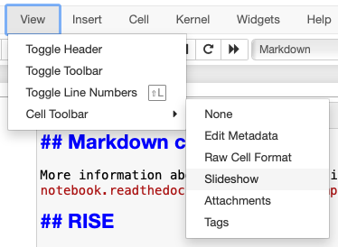
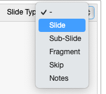

Title of your group project (the title should reflect the question that you are answering)#
Team members: A. Pandas, B. Python, C. Health, D. Datasci#
Tutorial: TUTXXXX#
Group number: XX#
Introduction#
briefly states the topic you chose and how will you approach this topic
provides background information needed to understand your poster
briefly presents the statistical approach used and maybe even one or two key figure/tables to summarize the relevant data
Methods#
mentions specific variables in dataset used or any data wrangling performed
completely and accurately describes the methods used, in paragraph form with functions and symbols in bold
provides enough information to allow someone to replicate your work but excludes needless detail
Results#
presents the main findings
includes figures, tables, graphs if they enhance clarity of presentation of information
refers to the relevant self‐explanatory figures, tables, graphs in the text (e.g., See Figure 1)
has captions above tables but below figures and graphs (so they are self-contained)
does not interpret the data or draw conclusions
Conclusion#
briefly restates the problem you are addressing and then states the main results (in complete sentences)
interprets the results and summarizes how the results address the problem
identifies any errors found
discusses any challenges faced, and strengths and limitations of the project
offers suggestions for improvement of the project (if any)
Some Useful Information on creating Markdown Cells and a Slideshow#
Don’t include this cell as part of your presentation
Markdown cells#
More information about Markdown Cells in Jupyter notebooks can be found here.
RISE#
More information about RISE can be found here.
A few basics to create a basic slideshow:
To change a Jupyter notebook cell’s Slide Type select Slideshow from the menu: View > Cell Toolbar > Slideshow

Choose Slide Type as Slide

Click on the RISE icon in the toolbar to run the slideshow.